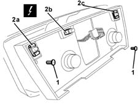
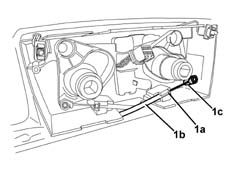
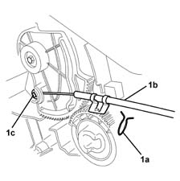

5020B38 air distribution flap control cable - r+r
- Path
- Procedures > 50 AUXILIARY UNITS > 5020 HEATER > 5020B heater controls > 5020B38 air distribution flap control cable - r+r
- Kind
- repair procedure (removal / refitting; the operation number is the code)
- Applies to
- all engines; all production periods
- Interactive page
- https://sloeber94.github.io/elrnDB-lYpsln/en/#/2429300
Applies to: all engines; all production periods
 Removing
Removing
 Refitting
Refitting7040A26 steering column trim - r+r
5040C12 air conditioner housing - r r with facia disconnected
7040A74 TRIM under control panel - R.R.
7040A11 control panel lid - r + r
5560B10 analogue control panel - r+r
7040L28 tunnel switch panel - r r
7040L22 REAR TRIM on TUNNEL -R.R.
7040A18 glove compartment on facia - arrange
7040A30 Left instrument panel lower TRIM - R.R.
2125A30 lever/knob cover - r + r
7040A28 TRIM on gearbox control panel - R.R.
5505A25 SWITCH UNIT for OPTIONAL EQUIPMENT - R.R.
5040D18 air conditioner control unit - r r
5580C26 LOCK BARREL KEY/SWITCH for deactivating passenger 'AIR BAG - R.R.
7040A10 instrument facia trim - r+r
5040D20 air conditioner control switches/button unit - r r
1. Undo the bolts and separate the bulb support.
2. Release the bulb supports (2a, 2b, 2c).
 | Name | Connector |
|---|---|---|
2a | Air conditioning / heater controls light |
| Name | Connector |
|---|---|---|
2b | Air conditioning / heater controls light |
| Name | Connector |
|---|---|---|
2c | Air conditioning / heater controls light |

Applies to: all engines; all production periods
1. Release the fastening clip (1a) and disconnect the flexible transmission cable (1b) from the control support (1c).

Applies to: all engines; all production periods
1. Release the fastening clip (1a) and disconnect the flexible transmission cable (1b) from the distribution flap control (1c).

Applies to: all engines; all production periods
Refitting
RemovingCheck that the transmission cable is not damaged.
Connect the flexible transmission cable to the distribution flap control and fit the fastening clip.
Connect the flexible transmission cable to the control unit.
Check that the control is working properly and that the flexible cable slides correctly inside the outer casing.
5040D20 air conditioner control switches/button unit - r r
7040A10 instrument facia trim - r+r
5580C26 LOCK BARREL KEY/SWITCH for deactivating passenger 'AIR BAG - R.R.
5040D18 air conditioner control unit - r r
5505A25 SWITCH UNIT for OPTIONAL EQUIPMENT - R.R.
7040A28 TRIM on gearbox control panel - R.R.
2125A30 lever/knob cover - r + r
7040A30 Left instrument panel lower TRIM - R.R.
7040A18 glove compartment on facia - arrange
7040L22 REAR TRIM on TUNNEL -R.R.
7040L28 tunnel switch panel - r r
5560B10 analogue control panel - r+r
7040A11 control panel lid - r + r
7040A74 TRIM under control panel - R.R.
5040C12 air conditioner housing - r r with facia disconnected
7040A26 steering column trim - r+r
Check that the air distribution control is working properly.
Topics linked from this page (21)
- 2125A30 lever/knob cover - r + r
- 5040C12 air conditioner housing - r r with facia disconnected
- 5040D18 air conditioner control unit - r r
- 5040D20 air conditioner control switches/button unit - r r
- 5505A25 SWITCH UNIT for OPTIONAL EQUIPMENT - R.R.
- 5560B10 analogue control panel - r+r
- 5570T80 car radio unit - r+r
- 5580C26 LOCK BARREL KEY/SWITCH for deactivating passenger 'AIR BAG - R.R.
- 7040A10 instrument facia trim - r+r
- 7040A11 control panel lid - r + r
- 7040A18 glove compartment on facia - arrange
- 7040A26 steering column trim - r+r
- 7040A28 TRIM on gearbox control panel - R.R.
- 7040A30 Left instrument panel lower TRIM - R.R.
- 7040A74 TRIM under control panel - R.R.
- 7040L20 tunnel trim - r r
- 7040L22 REAR TRIM on TUNNEL -R.R.
- 7040L28 tunnel switch panel - r r
- G45A Air conditioning / heater controls light ( AIR CONDITIONING )
- G45B Air conditioning / heater controls light ( AIR CONDITIONING )
- G45C Air conditioning / heater controls light ( AIR CONDITIONING )